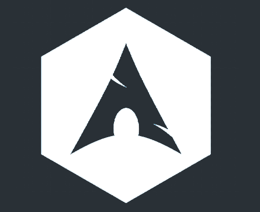
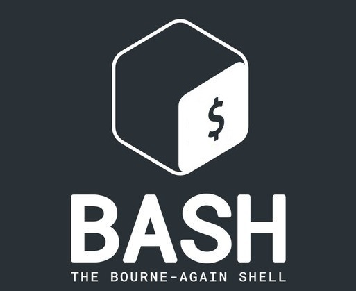
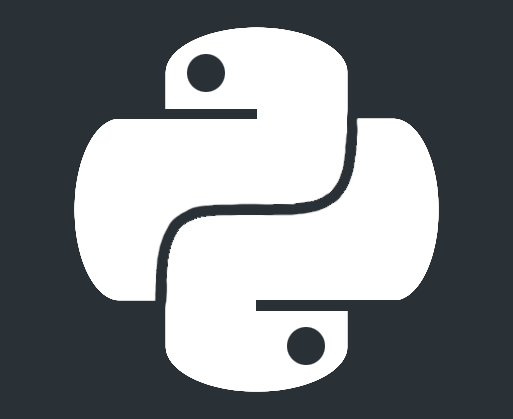
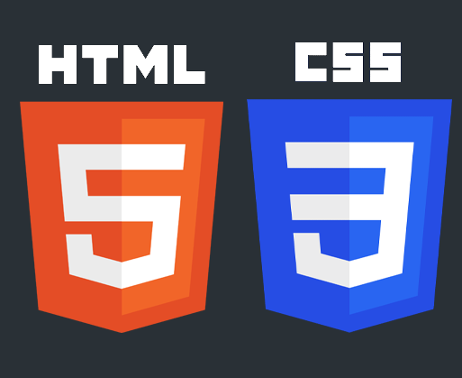

Alan Juarez
Ingeniero en sistemas computacionales.
Sobre mi

Mi nombre es Alan Juarez soy un egresado de la carrera de ingenieria en sistemas computacionales en la Universidad Tecnologica de México, un apacionado de las nuevas tecnologias emergentes que dia a dia se encuentran en evolucion. El aprender y enseñar es uno de mis objetivos en la vida para lograr la mejora continua y conseguir traspasar el conocimiento a nuevas generaciones.
Me defino como una persona creativa con ganas de aprender y expandir el conocimiento.
Portfolio
Algunos de mis proyectos

Entornos
Entorno personal de escritorio en Arch Linux utlilizando Qtile coordinado con otros softwares para lograr un buen uso.

Bash/Shell
Programa escrito en shell para actualizacion de sistemas Linux basados en gestor de archivos apt.

Python
Demostracion de programacion basica de Pyhton creando un juego de consola de Pokemon basico con jugabilidad tipo snake.

HTML/CSS
Creacion de esta pagina como curriculum y portafolio personal.
Exeriencia, Skills y Habilidades.
He adquirido varios conocimientos en mulriples ramas de la tecnologia.
Experiencia
• 10 de Febrero del 2020 - 30 de Mayo del 2020
Analista de Infraestructura en Fin común
Monitoreo de site, gestión de equipos en site, respaldos de VM, cableado estructurado y creación de página web
• 22 deMarzo del 2022 - 22 de Sepriembre del 2022
Personal de apoyo a personal docente en UNITEC
Préstamo y recepción de equipo audiovisual, mantenimiento, configuración y reparación de equipo audiovisual, gestión de inventarios de papelería y de equipo electrónico
Idiomas
• Español – nativo
• Ingles americano - intermedio
Conocimientos
• Conocimiento en Word, Excel, Power Point y Microsoft Teams.
• Conocimientos básicos de PowerBI.
• Conocimientos intermedios de programación en C#, C++, Python, Bash, Html y css.
• Conocimientos intermedios en base de datos ORACLE.
• Conocimientos avanzados en sistemas computacionales.
• Conocimiento intermedio en redes CISCO.
• Conocimientos en cableado estructurado de redes informáticas.
• Manejo general de sistemas Linux y Windows.
Habilidades y Capacidades
• Búsqueda de información para solución de problemas.
• Trabajo bajo presión y Trabajo en equipo.
• Capacidad de aprendizaje y decisión.
• Capacidad de dialogo
• Adaptación al manejo de diferentes softwares
• Buen manejo en los tiempos de cada tarea juicio y toma de decisiones.
• Inteligencia emocional.
• Orientación de servicio. * Empatía y tolerancia